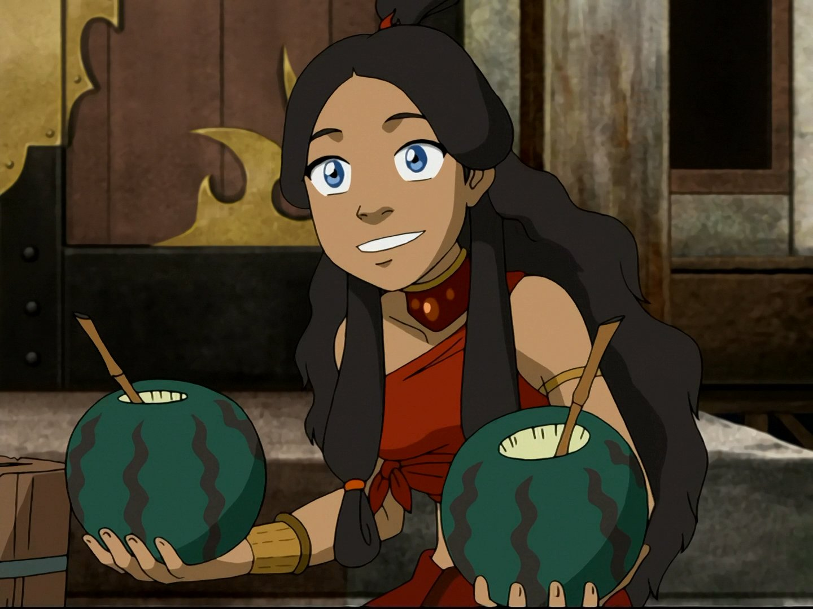

Located in Dallas, TX, Kustom Kakes specializes in creating personalized and delicious mini lunch-box cakes for any occasion. We have a history of crafting unique cakes, catering to diverse preferences and tastes. Our commitment to quality is presented in every cake we bake. From birthdays to picnic events, we are delighted to be a part of any occasion. Discover what youv'e been missing with a taste of Kustom Kakes!
At Kustom Kakes, our mission is to provide customers with convenient and indulgent mini cakes that reflect their individuality. Our cakes are designed for on-the-go enjoyment, and meticulously creafted. We offer a wide variety of flavors, designs and seasonal fillings. From vanilla to chocolate you choose! Let us take you on a journey of taste and excitement, try Kustom Kakes where every bite brings delight!
| Key People in our Organization | |||
|---|---|---|---|
| Name | Title | Picture | Biography |
| Sokka | CEO | Sokka, is the visionary who brought Kustom Kakes to life. Through his quick wit and strategic thinking he rose to the position by thinking of innovative cake designs for our customers. | |
| Katara | Logistics |  |
Katara, is our logistics manager. She is known for her resourcefullness and determination. She streamlines the flow of supplies and products to ensure everything is up to shape. |
| Toph | Baker | Toph is our primary baker, she chanels her creativity and skills into baking. She's worked with us from the beginning can create any quality designs! | |